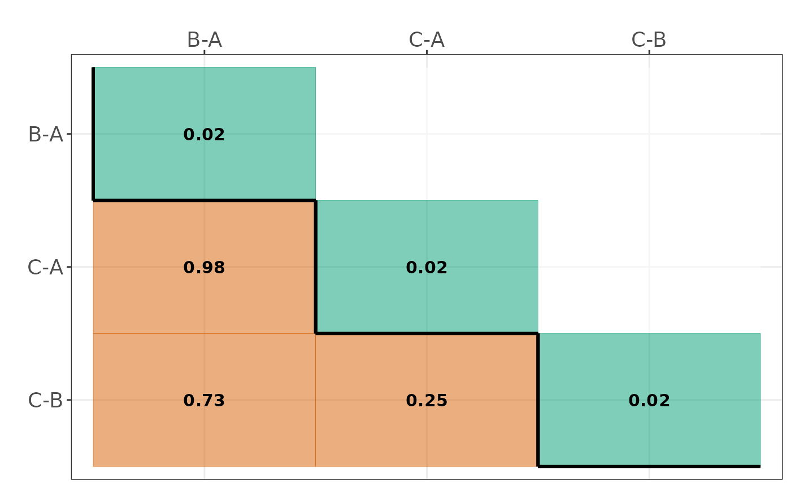
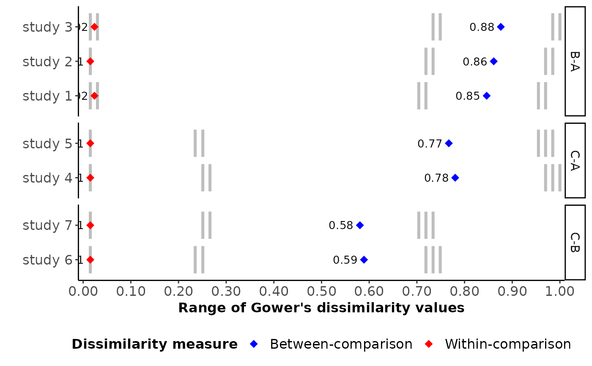
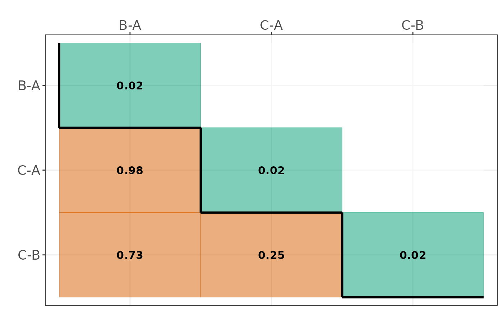
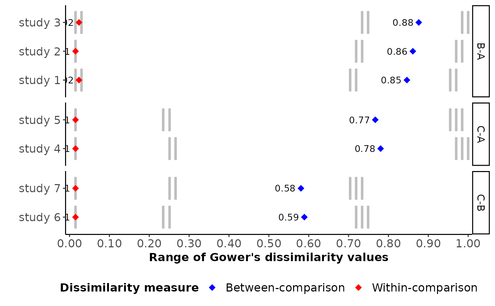

Plot Gower's disimilarity values for each study (Transitivity evaluation)
Source:R/plot.study.dissimilarities_function.R
plot_study_dissimilarities.RdIllustrating the range of Gower's dissimilarity values for each study in the network, as well as their between- and within-comparison dissimilarities
Usage
plot_study_dissimilarities(
results,
axis_title_size = 12,
axis_text_size = 12,
strip_text_size = 11,
label_size = 3.5
)Arguments
- results
An object of S3 class
comp_clustering. See 'Value' incomp_clustering.- axis_title_size
A positive integer for the font size of axis title (both axes).
axis_title_sizedetermines the axis.title argument found in the theme's properties in the R-package ggplot2.- axis_text_size
A positive integer for the font size of axis text (both axes).
axis_text_sizedetermines the axis.text argument found in the theme's properties in the R-package ggplot2.- strip_text_size
A positive integer for the font size of facet labels.
strip_text_sizedetermines the strip.text argument found in the theme's properties in the R-package ggplot2.- label_size
A positive integer for the font size of labels appearing on each study-specific segment.
label_sizedetermines the size argument found in the geom's aesthetic properties in the R-package ggplot2.
Value
A horizontal bar plot illustrating the range of Gower's dissimilarity
values for each study with those found in other comparisons. The
study names appear on the y-axis in the order they appear in results
and the dissimilarity values appear on the x-axis. Red and blue points refer
to the (average) within-comparison and between-comparison dissimilarity,
respectively, for each study.
Details
The range of Gower's dissimilarity values for each study versus the remaining studies in the network for a set of clinical and methodological characteristics that may act as effect modifiers. Gower's dissimilarities take values from 0 to 1, with 0 and 1 implying perfect similarity and perfect dissimilarity, respectively.
The unique similarity values appear as dotted, vertical, black lines on each bar.
References
Gower J. General Coefficient of Similarity and Some of Its Properties. Biometrics 1971;27(4):857–71. doi: 10.2307/2528823
Examples
# \donttest{
# Fictional dataset
data_set <- data.frame(Trial_name = as.character(1:7),
arm1 = c("1", "1", "1", "1", "1", "2", "2"),
arm2 = c("2", "2", "2", "3", "3", "3", "3"),
sample = c(140, 145, 150, 40, 45, 75, 80),
age = c(18, 18, 18, 48, 48, 35, 35),
blinding = factor(c("yes", "yes", "yes", "no", "no", "no", "no")))
# Obtain comparison dissimilarities (informative = TRUE)
res <- comp_clustering(input = data_set,
drug_names = c("A", "B", "C"),
threshold = 0.13, # General research setting
informative = TRUE,
get_plots = TRUE)
#> - 3 observed comparisons (0 single-study comparisons)
#> - Dropped characteristics: none
#> $Trials_diss_table
#> 1 B-A 2 B-A 3 B-A 4 C-A 5 C-A 6 C-B 7 C-B
#> 1 B-A 0.000 NA NA NA NA NA NA
#> 2 B-A 0.015 0.000 NA NA NA NA NA
#> 3 B-A 0.030 0.015 0.000 NA NA NA NA
#> 4 C-A 0.970 0.985 1.000 0.000 NA NA NA
#> 5 C-A 0.955 0.970 0.985 0.015 0.000 NA NA
#> 6 C-B 0.719 0.734 0.749 0.251 0.235 0.000 NA
#> 7 C-B 0.704 0.719 0.734 0.266 0.251 0.015 0
#>
#> $Comparisons_diss_table
#> B-A C-A C-B
#> B-A 0.02 NA NA
#> C-A 0.98 0.02 NA
#> C-B 0.73 0.25 0.02
#>
#> $Total_dissimilarity
#> comparison total_dissimilarity index_type
#> 5 C-A vs C-B 0.25 Between-comparison
#> 3 B-A vs C-B 0.73 Between-comparison
#> 2 B-A vs C-A 0.98 Between-comparison
#> 1 B-A 0.02 Within-comparison
#> 4 C-A 0.02 Within-comparison
#> 6 C-B 0.02 Within-comparison
#>
#> $Types_used
#> characteristic type
#> 1 sample double
#> 2 age double
#> 3 blinding integer
#>
#> $Total_missing
#> [1] "0%"
#>
#> $Within_comparison_dissimilarity
 #>
#> $Between_comparison_dissimilarity
#>
#> $Between_comparison_dissimilarity
 #>
#> $Dissimilarity_heatmap

#>
#> attr(,"class")
#> [1] "comp_clustering"
plot_study_dissimilarities(results = res,
axis_title_size = 12,
axis_text_size = 12,
strip_text_size = 11,
label_size = 3.5)

# }
#>
#> $Dissimilarity_heatmap

#>
#> attr(,"class")
#> [1] "comp_clustering"
plot_study_dissimilarities(results = res,
axis_title_size = 12,
axis_text_size = 12,
strip_text_size = 11,
label_size = 3.5)

# }